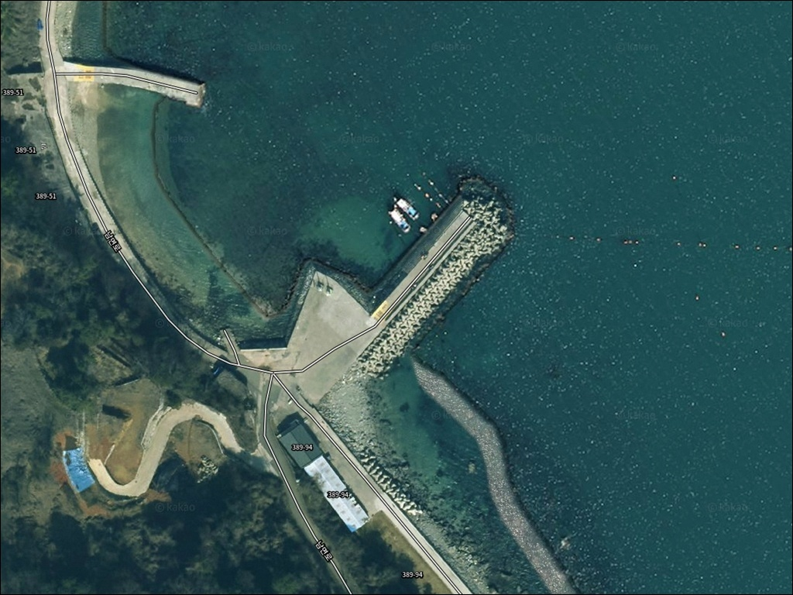
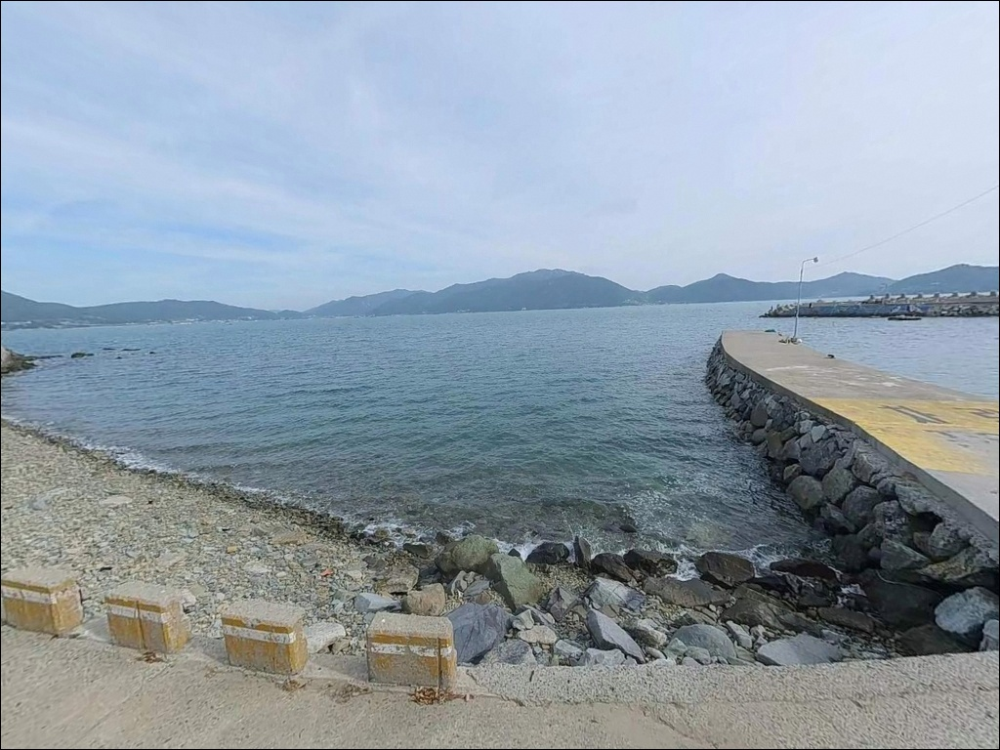
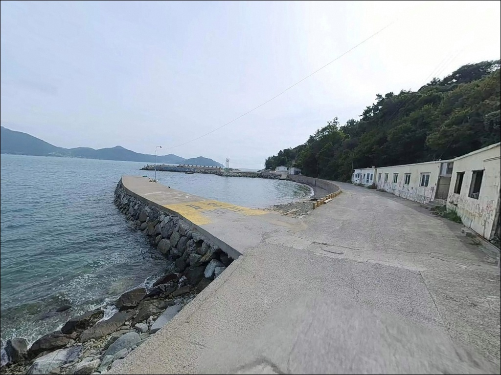
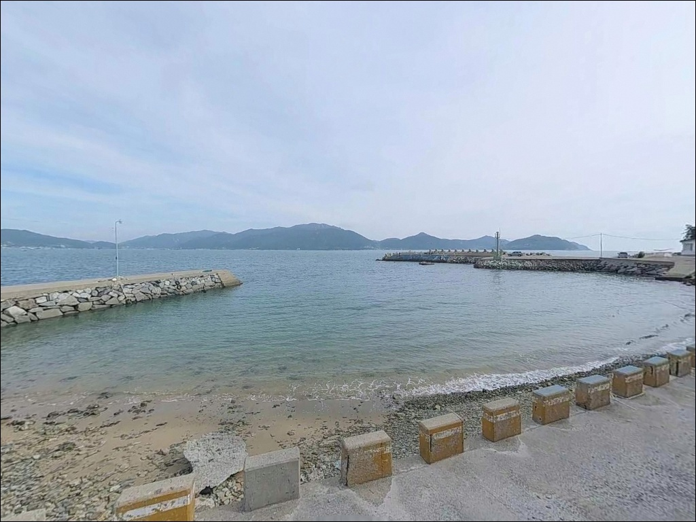
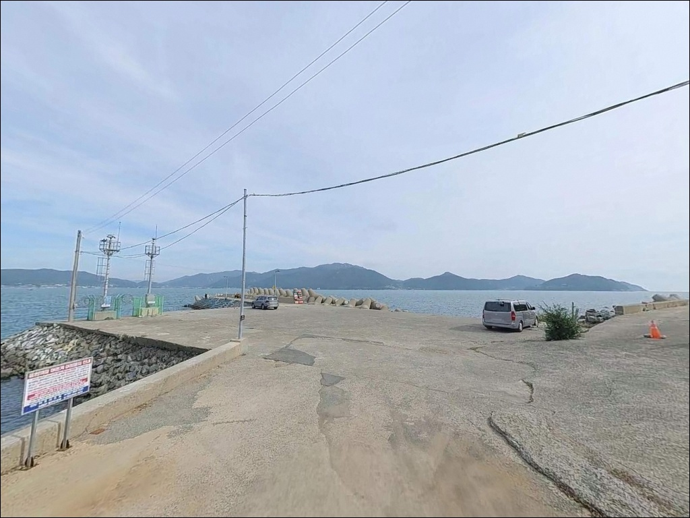
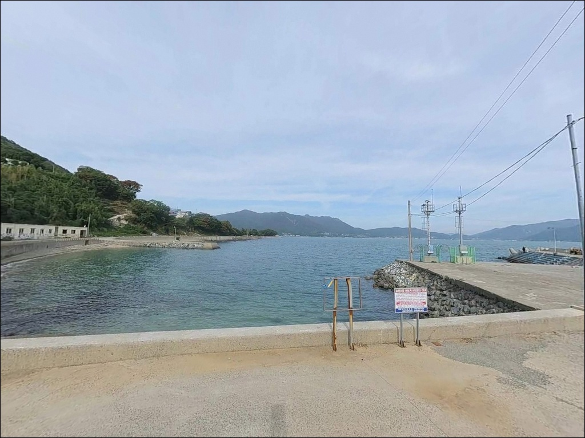
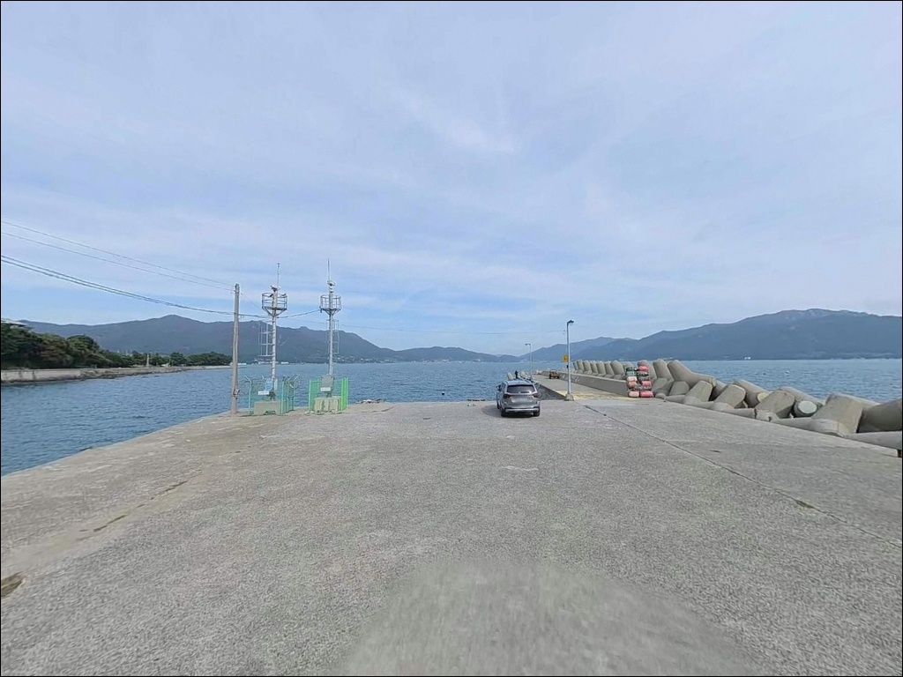
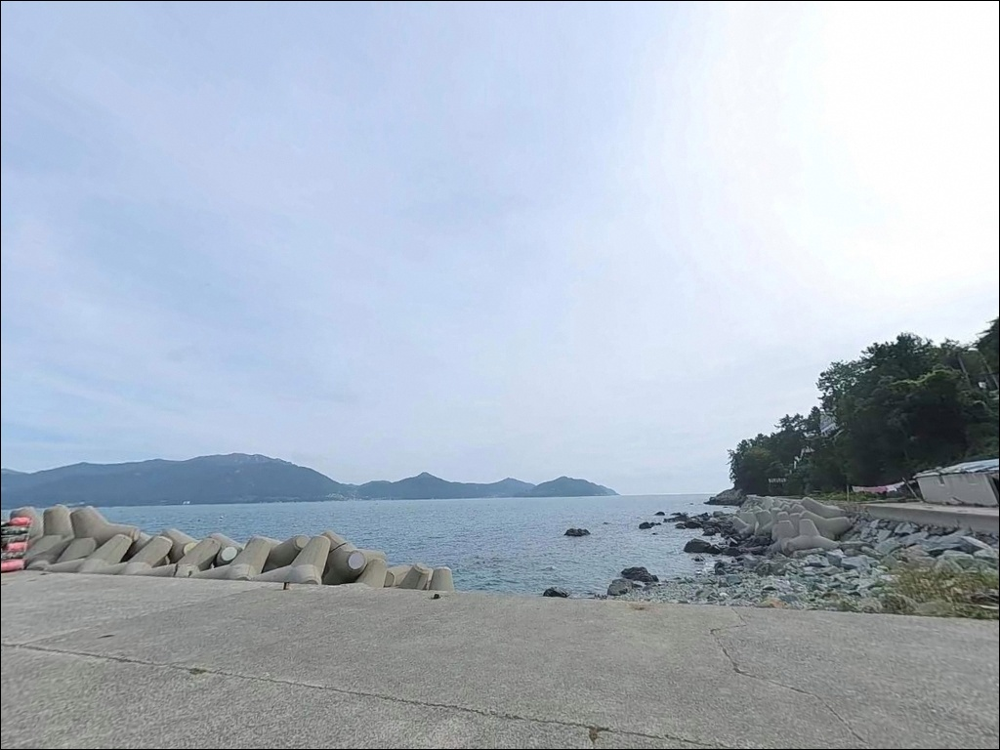
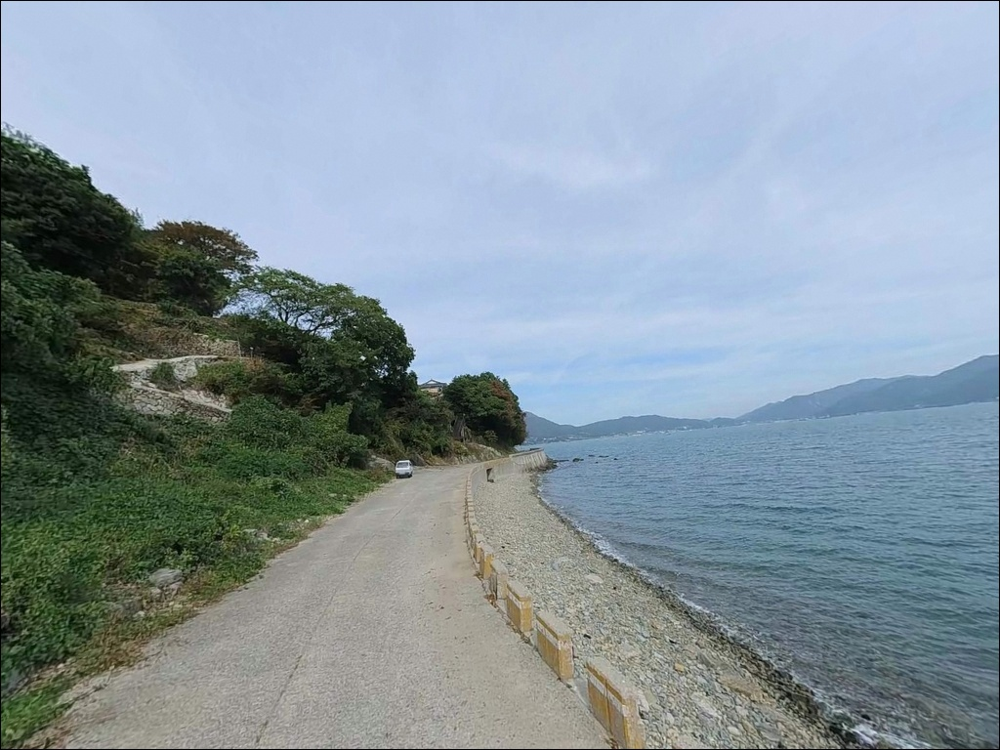

초들물 조류가 살아나야 제대로 낚이는 남해 홍현방파제의 감성돔 포인트


포인트 안내
홍현방파제
경남 남해군 남면 홍현리 189-6
초들물이 시작되기 전에 도착하지 않으면
외항 테트라포트 쪽 핵심 자리는
이미 다른 낚시인이 차지한 상태입니다.
앵강만 입구 방향을 향한 외항 구조는
조류가 살아나는 타이밍이 조과를 가르는 구조이고,
그 타이밍은 물때 확인 없이는 예측이 불가능합니다.
경남 남해군 남면 홍현리,
가천 다랭이마을에서 해안을 따라
남쪽으로 내려오면 나오는 홍현방파제는
앵강만 북서쪽 해안선에 자리한 어촌 방파제입니다.
계단식 석축과 테트라포트가 혼합된 구조로,
수중여가 발달한 암반 저질이 방파제 전 구간을 받치고 있습니다.
이 글은 홍현방파제의 진입 동선,
차박 여건, 물때 판단 기준,
낚시 스타일별 공략 조건에 집중합니다.
조황 단정이나 특정 어종 보장은
이 글의 범위에 포함되지 않습니다.

1. 진입 동선과 주차 여건
남해 남면로 해안도로를 통해
홍현방파제 방면으로 진입합니다.
남면 해안도로는 곡선이 많고
폭이 좁은 2차선 구간이 이어지므로
대형 캠핑카라면 교행 구간을
출발 전 위성지도로 미리 확인해 두는 것이 안전합니다.
방파제 직전까지 포장도로가 이어지며
비포장 구간은 없습니다.
내비게이션에 홍현방파제를 입력하면
방파제 앞 넓은 공터로 안내됩니다.
공터는 차량 15대 이상 수용 가능한 수준이며,
방파제 발판까지 이동 거리가 짧아
장비 이동 동선이 유리한 편입니다.
회차는 항구 내 물량장 구조 덕분에
비교적 자유롭습니다.
다만 어선 하적 동선과 겹치지 않도록
주차 위치를 잡는 것이 기본 매너입니다.

2. 차박 환경과 야간 체류 여건
방파제 앞 공터에 차를 대면
낚시 자리까지 이동 거리가 거의 없어
장비 접근성만큼은 남해 남면 포인트 중
상위권에 해당합니다.
홍현마을 민가가 방파제 주변에 인접해 있지만,
마을 규모가 작고 야간 통행이 드물어
소규모 어촌 마을의 조용한 분위기는 유지됩니다.
가천 다랭이마을과 인접한 관광지 특성상
낮 시간대에는 차량 통행이 있는 편입니다.
야간에는 분위기가 달라지지만,
방파제 자체 가로등 수가 많지 않으므로
개인 조명 장비는 반드시 챙겨야 합니다.
홍현방파제는 어촌 체험 마을로 운영되는 구역과 인접해 있습니다.
어민들의 통발·그물 등 작업 시설물이
방파제 주변에 놓인 경우가 있으므로
야간 이동 중 이를 건드리지 않도록
주의하는 것이 기본 매너입니다.

3. 주변 편의시설 및 인프라 현황
반경 1km 이내에 가천 다랭이마을이 있습니다.
카페와 식당이 집약된 관광지로,
방문 전날 동선에 넣어두면
끼니 해결과 간단한 보충에 활용할 수 있습니다.
다만 관광지 운영 시간이 정해져 있어
이른 새벽이나 심야 시간대에는 이용이 어렵습니다.
낚시 용품이 필요하다면
홍현방파제에서 북쪽으로 약 2km 거리의
향촌마을 조일낚시점을 활용할 수 있습니다.
밑밥 판매와 지역 조황 정보를 함께 확인하기 좋은 곳으로,
출조 전 들러보는 것이 현실적입니다.
편의점과 마트는 반경 3km 내에 확인된 곳이 없습니다.
남면 내 당항리 방향으로 5km 이상 이동해야
마트와 주유소가 나옵니다.
식수·얼음·소품은 출발 전에 모두 갖추고
진입하는 편이 안전합니다.

4. 진입 전 반드시 챙겨야 할 준비사항
홍현방파제 방문 전에
가장 먼저 확인해야 할 것은 물때입니다.
앵강만 입구에 위치한 외항은
초들물에서 중날물 구간이 조류가 살아나는 타이밍입니다.
바다타임에서 홍현리 기준 물때를 확인하고,
이 타이밍에 자리를 잡을 수 있도록
출발 시각을 역산해 두는 것이 기본 전략입니다.
남향 외해 포인트 특성상
남풍과 남서풍 계열 기상에서 파도가 높아집니다.
기상청 바다날씨를 당일 아침 한 번 더 확인하는 것이
헛걸음을 막는 조건입니다.
외항 테트라포트와 암반 구간은
물에 젖으면 미끄럼 위험이 높습니다.
펠트화와 구명조끼는
선택 장비가 아닌 기본 안전 조건이며,
수중여 기반의 암반 저질에서는 채비 손실이 잦으니
여분 채비를 넉넉하게 챙기는 편이 좋습니다.

5. 외항과 내항, 어느 자리가 맞는지 판단하는 기준
홍현방파제는 좌측 계단식 석축과
우측 테트라포트가 혼합된 구조입니다.
외항 쪽은 앵강만 입구와 남해 외해를 향해 열려 있어
조류 영향이 직접적으로 들어옵니다.
수심은 외항 기준 8m 안팎으로 깊고 일정한 편이며,
수중여가 곳곳에 발달해 있어
어류가 머물기 좋은 은신처가 풍부합니다.
앵강만은 남해 감성돔 산란지로 알려진 내만 구조입니다.
홍현방파제는 그 만 입구에 위치해
외해 조류와 내만 조류가 교차하는 구간에 자리합니다.
조류가 흐르는 타이밍에
외항 테트라포트 전 구간이 핵심 자리가 되고,
조류가 멈추는 정조 구간에서는 내항 석축 쪽으로
자리를 옮기는 전략이 효율적입니다.
바다타임 기준 수심 0.2~4.8m 범위는 방파제 발밑 수심이며,
외항 끝단 방향으로 캐스팅할수록 수심이 깊어지는 구조입니다.
암반 저질 특성상 밑걸림이 잦은 구간이 있으므로
채비를 멀리 보낸 뒤
바닥을 끌지 않고 중층을 유지하는 공략이 유리합니다.
최신 조황은 출조 전에 반드시 검색해 보시기 바랍니다.


6. 홍현방파제에 어울리는 낚시 스타일
찌낚시(감성돔 대상)는
이 포인트에서 가장 기본이 되는 낚시 스타일입니다.
외항 테트라포트 전 구간이 감성돔 공략 구간으로,
반유동 채비로 수중여 주변을 흘리는 방식이 정석입니다.
겨울철 대물 감성돔 포인트로 알려진 구간이어서
찬 물때를 노리는 낚시인에게 잘 맞습니다.
볼락 루어낚시는 야간 입장이라면
놓치기 어려운 스타일입니다.
방파제 내항 석축 발밑과 외항 테트라포트 경계 구간이
볼락이 불 아래로 모이는 구조입니다.
경량 지그헤드 리그 또는 소형 미노우를 활용하고,
집어등을 함께 사용하면 조과 차이가 뚜렷한 편입니다.
에깅(무늬오징어·갑오징어)은
가을 시즌에 집중 공략할 수 있는 방식입니다.
수질이 맑고 수중여와 해초가 공존하는 지형은
무늬오징어 서식 조건에 부합하며,
방파제 끝단 외항 방향 캐스팅이 기본 전략입니다.
조류 소통이 원활한 끝단 정면 구간이
에깅 포인트의 핵심입니다.
원투낚시는 내항과 방파제 중간 수심 구간에서
안정적으로 운용할 수 있습니다.
단, 암반 저질 특성상 채비 손실 관리가 필요하며
봉돌과 바늘 여분을 넉넉히 준비하는 편이 좋습니다.

7. 대안 포인트와 플랜 B 동선
홍현방파제 자리가 이미 찼거나
기상이 맞지 않을 때
첫 번째 대안은 향촌방파제입니다.
홍현방파제에서 북쪽으로 약 2km 거리이며
같은 앵강만 해역에 위치해 어종 구성이 유사합니다.
향촌에는 갯바위 출조 배가 운항 중이어서
방파제 외 선상 루트도 함께 검토할 수 있습니다.
홍현~가천 갯바위 구간은
2020년 이후 낚시 금지 구역으로 지정된 이력이 있습니다.
해금 여부는 출조 전 남해군 또는
현지 낚시점에서 반드시 확인해야 합니다.
방파제와 갯바위 구간은 별개 포인트로 구분해야 하며,
갯바위를 목적지로 삼았다면 사전 확인이 필수입니다.
차박 대안 후보로는
남해군 남면의 두곡·월포 해수욕장 주차장이 있습니다.
홍현방파제에서 약 7km 거리이며,
주차 공간이 상대적으로 넓고
솔밭 인접 환경으로 체류 여건이 낫습니다.
10km권에서는 미조항이 에깅과 볼락낚시 인프라를 갖춘
남해 남면 대표 대형 항구로 활용 가능합니다.

물때를 알면
홍현방파제는 절반이 해결됩니다
감성돔 찌낚시나 볼락 루어낚시,
가을 에깅을 즐기는 낚시인이라면
홍현방파제의 지형 구조는
이 세 가지 방식 모두에 잘 맞는 편입니다.
수중여가 발달한 암반 저질,
앵강만 입구에서 교차하는 조류 흐름,
그리고 방파제 앞 넓은 공터 주차 여건까지
갖추고 있어 진입 허들이 낮습니다.
반면 물때 확인 없이 사리 전후에 도착하거나,
남풍 기상에서 외항 쪽에 자리를 잡으면
원하는 조건을 만나기 어렵습니다.
초들물 타이밍, 여분 채비, 외항 조명 장비,
이 세 가지를 갖추고 간다면
남해 남면에서 기억에 남는 포인트가 될 수 있는 곳입니다.
방파제 앞 공터에 차를 붙이고
조류가 살아나는 타이밍에
외항 테트라포트 자리 하나를 잡는 것,
낚시를 마친 뒤 조용히 하룻밤 머무는 것까지
홍현방파제는 그 동선을 한곳에서 완성할 수 있는 포인트입니다.